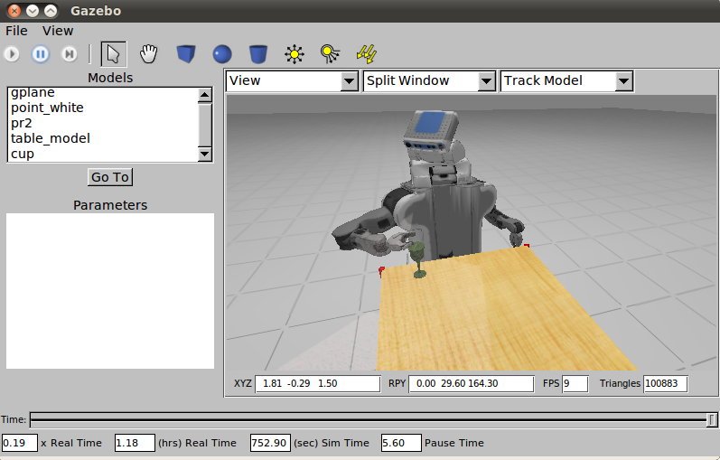

Gazebo

- 官方网站：http://gazebosim.org/
- 支持的物理引擎：ODE/Bullet/Simbody/DART
- 开源仿真环境
- 属于ROS生态
引言
Gazebo是目前最广泛使用的机器人仿真环境，最早在2004年由USC Robotics Research Lab (南加州大学机器人实验室) 开发。依托于ROS的发展，Gazebo具有很强的仿真能力，同时也在机器人研究和开发中得到了广泛应用。Gazebo的功能包括：动力学仿真 (Dynamics Simulation)、传感器仿真 (Sensor Simulation)、三维环境仿真 (3D Environment Simulation)，同时支持多种机器人模型：包括PR2、Turtlebot、AR.Drone等。
Gazebo Classic 与 Gazebo (Ignition/Gz)
Gazebo项目经历了重要的版本演变。Gazebo Classic（版本1至11）是长期以来被广泛使用的版本，其最终版本Gazebo 11已于2025年停止官方支持。Gazebo（前称Ignition Gazebo，后更名为Gz）是新一代仿真平台，采用模块化架构 (Modular Architecture) 重新设计，提供更灵活的组件化系统。新版Gazebo使用Gz Transport通信层替代了旧版的自定义通信方式，并引入了更先进的渲染引擎Ogre2。
系统架构
Gazebo采用客户端-服务器架构 (Client-Server Architecture)：
- gzserver：负责物理仿真计算、传感器数据生成以及世界状态的维护。该进程在后台运行，不依赖图形界面。
- gzclient：提供三维可视化界面，用户可以通过图形界面观察仿真场景、插入模型以及调整仿真参数。
这种架构设计使得仿真计算与可视化分离，允许在无头模式 (Headless Mode) 下运行仿真，适合在服务器或CI/CD流水线中进行自动化测试。
传感器支持
Gazebo内置了丰富的传感器模型 (Sensor Models)，覆盖了机器人常用的感知设备：
- 相机 (Camera)：包括单目相机、双目相机 (Stereo Camera)、深度相机 (Depth Camera) 以及全景相机
- 激光雷达 (LiDAR)：支持二维和三维激光扫描仪，可配置扫描范围、分辨率和噪声参数
- 惯性测量单元 (IMU)：模拟加速度计和陀螺仪数据
- GPS：提供全局定位信息仿真
- 力/力矩传感器 (Force/Torque Sensor)：用于检测关节处的力和力矩
- 接触传感器 (Contact Sensor)：检测物体间的碰撞和接触状态
每种传感器均支持噪声模型 (Noise Model) 配置，使仿真数据更加贴近真实传感器的输出特性。
与ROS的集成
Gazebo与ROS (Robot Operating System) 的深度集成是其核心优势之一。通过 gazebo_ros_pkgs 功能包集，Gazebo能够将仿真数据以ROS话题 (Topic)、服务 (Service) 和动作 (Action) 的形式发布，使得相同的ROS节点代码可以无缝地在仿真环境与真实硬件之间切换。对于ROS 2，集成方式通过 ros_gz_bridge 桥接包实现，支持在Gz仿真与ROS 2之间转换消息格式。
模型格式：URDF 与 SDF
Gazebo支持两种主要的模型描述格式：
- URDF (Unified Robot Description Format)：ROS生态中标准的机器人描述格式，用于定义机器人的连杆 (Link)、关节 (Joint) 和运动学结构。URDF的局限性在于仅支持树状结构，不支持闭合运动链 (Closed Kinematic Chain)。
- SDF (Simulation Description Format)：Gazebo原生支持的仿真描述格式，功能比URDF更加丰富。SDF不仅可以描述机器人模型，还可以定义完整的仿真世界 (World)，包括光照、地形、物理参数等。SDF支持闭合运动链以及更复杂的传感器定义。
插件系统
Gazebo提供灵活的插件系统 (Plugin System)，允许用户在不修改源代码的情况下扩展仿真功能。插件主要分为以下几类：
- World Plugin：控制仿真世界的全局行为
- Model Plugin：附加到特定模型上，控制模型的运动或行为
- Sensor Plugin：自定义传感器的数据处理逻辑
- Visual Plugin：控制可视化渲染效果
插件使用C++编写，通过共享库 (Shared Library) 的方式动态加载。
安装方式
在Ubuntu系统上，可以通过APT包管理器安装Gazebo。以ROS 2 Humble配合Gz Fortress为例：
sudo apt install ros-humble-ros-gz
安装完成后，可以通过以下命令启动一个空白世界进行验证：
gz sim empty.sdf
优势与局限
优势：
- 与ROS生态无缝集成，社区庞大，文档资源丰富
- 支持多种物理引擎，灵活切换
- 传感器模型种类齐全，噪声模型可配置
- 插件系统扩展性强
局限：
- 视觉渲染质量相比游戏引擎 (如Unreal、Unity) 仍有差距
- 对于大规模场景或高精度接触仿真，性能可能成为瓶颈
- Gazebo Classic到新版Gazebo的迁移存在一定学习成本
SDF 与 URDF 建模
说明 Gazebo 使用的两种模型格式的具体用法与配置方式。
SDF（Simulation Description Format）
SDF 是 Gazebo 原生格式，比 URDF 功能更丰富。SDF 文件可描述单个机器人模型，也可描述包含多个模型、光源和物理参数的完整仿真世界。一个最简单的机器人 SDF 模型示例：
<?xml version="1.0"?>
<sdf version="1.9">
<model name="simple_robot">
<link name="base_link">
<inertial>
<mass>1.0</mass>
<inertia><ixx>0.1</ixx><iyy>0.1</iyy><izz>0.1</izz></inertia>
</inertial>
<visual name="visual">
<geometry><box><size>0.5 0.3 0.2</size></box></geometry>
</visual>
<collision name="collision">
<geometry><box><size>0.5 0.3 0.2</size></box></geometry>
</collision>
</link>
</model>
</sdf>
<inertial> 中的惯性张量参数对物理仿真的稳定性至关重要。对于一个质量为 、边长为 的均质长方体，主轴惯性矩的计算公式为：
URDF 转 SDF
ROS 通常使用 URDF 描述机器人，Gazebo 加载时会自动转换为 SDF，但需要额外的 Gazebo 插件标签。URDF 中添加 Gazebo 特定标签的示例：
<gazebo reference="base_link">
<material>Gazebo/Blue</material>
<mu1>0.9</mu1>
<mu2>0.9</mu2>
</gazebo>
其中 mu1 和 mu2 分别表示 ODE 物理引擎中的静摩擦系数 (Static Friction Coefficient) 和动摩擦系数 (Dynamic Friction Coefficient)。
xacro 宏语言（XML Macro Language）可以简化复杂机器人的 URDF 编写，避免重复代码。使用 xacro 定义可复用的轮子宏示例：
<xacro:macro name="wheel" params="name x_offset">
<link name="${name}_link">
<inertial>
<mass value="0.5"/>
<inertia ixx="0.001" ixy="0.0" ixz="0.0"
iyy="0.001" iyz="0.0" izz="0.001"/>
</inertial>
<visual>
<geometry><cylinder radius="0.05" length="0.04"/></geometry>
</visual>
<collision>
<geometry><cylinder radius="0.05" length="0.04"/></geometry>
</collision>
</link>
<joint name="${name}_joint" type="continuous">
<parent link="base_link"/>
<child link="${name}_link"/>
<origin xyz="${x_offset} 0.22 0" rpy="-1.5708 0 0"/>
<axis xyz="0 0 1"/>
</joint>
</xacro:macro>
<!-- 调用宏 -->
<xacro:wheel name="left_wheel" x_offset="0.0"/>
<xacro:wheel name="right_wheel" x_offset="0.0"/>
World 文件结构
World 文件定义了仿真场景，包括物理参数、光源、模型和插件：
<?xml version="1.0"?>
<sdf version="1.9">
<world name="robot_world">
<!-- 物理引擎参数 -->
<physics name="1ms" type="ignored">
<max_step_size>0.001</max_step_size>
<real_time_factor>1.0</real_time_factor>
</physics>
<!-- 光源 -->
<light name="sun" type="directional">
<direction>-0.5 0.1 -0.9</direction>
<diffuse>0.8 0.8 0.8 1</diffuse>
</light>
<!-- 地面 -->
<model name="ground_plane">
<static>true</static>
<link name="link">
<collision name="collision">
<geometry><plane><normal>0 0 1</normal></plane></geometry>
</collision>
</link>
</model>
<!-- 加载机器人模型 -->
<include>
<uri>model://my_robot</uri>
<pose>0 0 0.5 0 0 0</pose>
</include>
</world>
</sdf>
<pose> 标签使用 6 个数值表示模型位姿：前三个为平移分量 （单位：米），后三个为欧拉角 （单位：弧度）。
传感器插件
Gazebo 通过插件系统仿真各类传感器，以下是常用传感器的 SDF/URDF 配置。
激光雷达（LiDAR）
<sensor name="lidar" type="ray">
<pose>0 0 0.1 0 0 0</pose>
<always_on>true</always_on>
<update_rate>10</update_rate>
<ray>
<scan>
<horizontal>
<samples>360</samples>
<resolution>1</resolution>
<min_angle>-3.14159</min_angle>
<max_angle>3.14159</max_angle>
</horizontal>
</scan>
<range>
<min>0.12</min>
<max>30.0</max>
</range>
<noise><type>gaussian</type><mean>0.0</mean><stddev>0.01</stddev></noise>
</ray>
<plugin name="laser" filename="libgazebo_ros_ray_sensor.so">
<ros><namespace>/robot</namespace></ros>
<output_type>sensor_msgs/LaserScan</output_type>
<frame_name>lidar_link</frame_name>
</plugin>
</sensor>
激光雷达测量噪声通常建模为高斯噪声 (Gaussian Noise)，即实际测距值 与真实距离 之间满足：
上述配置中 stddev 设为 0.01，即标准差 米。
RGB 摄像头
<sensor name="camera" type="camera">
<update_rate>30</update_rate>
<camera>
<horizontal_fov>1.047</horizontal_fov>
<image>
<width>640</width><height>480</height><format>R8G8B8</format>
</image>
<clip><near>0.1</near><far>100</far></clip>
<noise><type>gaussian</type><stddev>0.007</stddev></noise>
</camera>
<plugin name="camera_plugin" filename="libgazebo_ros_camera.so">
<ros><namespace>/robot</namespace></ros>
<frame_name>camera_link_optical</frame_name>
</plugin>
</sensor>
horizontal_fov 为水平视场角 (Horizontal Field of View)，单位弧度。1.047 弧度约等于 60°。相机的焦距 （像素单位）与视场角 及图像宽度 的关系为：
IMU（惯性测量单元）
<sensor name="imu_sensor" type="imu">
<always_on>true</always_on>
<update_rate>200</update_rate>
<imu>
<angular_velocity>
<x><noise type="gaussian"><stddev>2e-4</stddev></noise></x>
</angular_velocity>
<linear_acceleration>
<x><noise type="gaussian"><stddev>1.7e-2</stddev></noise></x>
</linear_acceleration>
</imu>
<plugin filename="libgazebo_ros_imu_sensor.so" name="imu_plugin">
<ros><namespace>/robot</namespace></ros>
<frame_name>imu_link</frame_name>
</plugin>
</sensor>
深度相机（RGB-D）
<sensor name="depth_camera" type="depth">
<update_rate>30</update_rate>
<camera>
<horizontal_fov>1.047</horizontal_fov>
<image><width>640</width><height>480</height></image>
<clip><near>0.05</near><far>8.0</far></clip>
</camera>
<plugin filename="libgazebo_ros_camera.so" name="depth_plugin">
<ros><namespace>/robot</namespace></ros>
<frame_name>camera_depth_optical_frame</frame_name>
<min_depth>0.05</min_depth>
<max_depth>8.0</max_depth>
</plugin>
</sensor>
深度相机（如 Intel RealSense、Microsoft Kinect）同时输出彩色图像和深度图，发布的 ROS 话题通常包括 /robot/depth/image_raw（深度图，单位毫米）和 /robot/depth/points（点云，sensor_msgs/PointCloud2）。
差速驱动插件
移动机器人底盘通常使用差速驱动（Differential Drive）控制插件：
<plugin name="diff_drive" filename="libgazebo_ros_diff_drive.so">
<ros><namespace>/robot</namespace></ros>
<left_joint>left_wheel_joint</left_joint>
<right_joint>right_wheel_joint</right_joint>
<wheel_separation>0.44</wheel_separation>
<wheel_diameter>0.1</wheel_diameter>
<max_wheel_torque>20</max_wheel_torque>
<max_wheel_acceleration>1.0</max_wheel_acceleration>
<publish_odom>true</publish_odom>
<publish_odom_tf>true</publish_odom_tf>
<publish_wheel_tf>true</publish_wheel_tf>
<odometry_frame>odom</odometry_frame>
<robot_base_frame>base_footprint</robot_base_frame>
</plugin>
差速驱动模型中，给定左轮线速度 与右轮线速度 ，机器人中心的线速度 和角速度 为：
其中 为两轮间距（wheel_separation）。插件接收 geometry_msgs/Twist 消息，将 和 转换为左右轮速度指令，同时根据编码器积分计算里程计 (Odometry) 数据。
与 ROS 2 集成（Gz + ROS 2）
新版 Gazebo（Gz Harmonic 及以上）与 ROS 2 的集成通过 ros_gz 桥接包实现。
安装
sudo apt install ros-humble-ros-gz
启动 Gazebo 并加载 World
# launch/robot.launch.py
import os
from launch import LaunchDescription
from launch.actions import ExecuteProcess, IncludeLaunchDescription
from launch_ros.actions import Node
from ament_index_python.packages import get_package_share_directory
def generate_launch_description():
pkg_dir = get_package_share_directory('my_robot_pkg')
world_file = os.path.join(pkg_dir, 'worlds', 'robot_world.sdf')
gz_sim = ExecuteProcess(
cmd=['gz', 'sim', '-r', world_file],
output='screen'
)
# 桥接 Gazebo 话题到 ROS 2
bridge = Node(
package='ros_gz_bridge',
executable='parameter_bridge',
arguments=[
'/clock@rosgraph_msgs/msg/Clock[gz.msgs.Clock',
'/robot/scan@sensor_msgs/msg/LaserScan[gz.msgs.LaserScan',
'/robot/cmd_vel@geometry_msgs/msg/Twist]gz.msgs.Twist',
'/robot/odom@nav_msgs/msg/Odometry[gz.msgs.Odometry',
],
output='screen'
)
return LaunchDescription([gz_sim, bridge])
话题方向符号说明：[ 表示从 Gz 到 ROS 2 的单向桥接，] 表示从 ROS 2 到 Gz 的单向桥接，@ 表示双向桥接。
常用 gz 命令行工具
# 列出运行中的仿真世界
gz service -s /gazebo/worlds --reqtype gz.msgs.Empty --reptype gz.msgs.StringMsg_V --req '' --timeout 2000
# 暂停/恢复仿真
gz service -s /world/robot_world/control --reqtype gz.msgs.WorldControl --reptype gz.msgs.Boolean --req 'pause: true' --timeout 2000
# 查看话题列表
gz topic -l
# 查看指定话题
gz topic -e -t /robot/scan
# 加载新模型到运行中的场景
gz service -s /world/robot_world/create --reqtype gz.msgs.EntityFactory --reptype gz.msgs.Boolean \
--req 'sdf_filename: "/path/to/model.sdf", pose: {position: {x: 1.0, y: 0.0, z: 0.5}}' --timeout 2000
物理引擎选择
Gazebo 支持多种物理引擎，可在 world 文件中指定：
| 物理引擎 | 特点 | 适用场景 |
|---|---|---|
| ODE（默认） | 稳定成熟，速度较快 | 通用机器人仿真 |
| Bullet | 精确碰撞检测 | 复杂碰撞场景 |
| DART | 接触力计算更准确 | 人形机器人、操作任务 |
| TPE（Trivial Physics Engine） | 运动学仿真，无动力学 | 非物理运动演示 |
新版 Gz 默认使用内置物理引擎，并支持通过 DART 插件实现高精度接触仿真。物理引擎的核心任务是在每个仿真时间步长 内求解运动方程：
其中 为质量矩阵， 为科氏力与离心力矩阵， 为重力项， 为广义关节力矩， 为外力（包括接触力）的广义力映射。
性能调优
在复杂场景下提升 Gazebo 仿真性能的方法：
- 降低更新频率：将不关键的传感器（如相机）
update_rate从 30 Hz 降低到 10 Hz，显著减少计算负载 - 减少碰撞体复杂度：使用简化的碰撞几何体（如 box、cylinder）代替精细的 mesh
- 关闭阴影渲染：在训练场景中禁用阴影以提升渲染帧率
- 无头模式：训练时使用
gz sim -s（仅启动服务器，不启动 GUI）节省 GPU 资源 - 实时因子控制：设置
real_time_factor小于 1 可放慢仿真（调试用），大于 1 加速仿真（训练用）
实时因子（Real Time Factor，RTF）定义为仿真时间推进速度与挂钟时间 (Wall Clock Time) 的比值：
RTF 为 1 表示仿真与现实时间同步；RTF 大于 1 表示仿真快于现实，适用于强化学习数据采集场景。
常见问题排查
| 问题 | 原因 | 解决方法 |
|---|---|---|
| 模型加载失败 | GAZEBO_MODEL_PATH 未设置 |
export GAZEBO_MODEL_PATH=$GAZEBO_MODEL_PATH:~/models |
| 物理不稳定、模型抖动 | 时间步长过大或惯性参数错误 | 减小 max_step_size，检查 <inertia> 数值 |
| 传感器不发布数据 | 插件未正确加载 | 检查 gz topic -l 是否有对应话题 |
| ROS 收不到 Gz 话题 | 桥接配置错误 | 核对 parameter_bridge 的话题方向（[ 或 ]） |
| 仿真运行缓慢 | 场景过于复杂或碰撞体面数过高 | 简化碰撞几何体，使用无头模式，降低传感器更新频率 |
| 关节突然爆炸或穿透 | 惯性矩阵设置不合理（如全零） | 使用物体实际几何形状计算合理的惯性参数 |
参考资料
- Gazebo官方文档
- ROS 2与Gazebo集成教程
- SDF格式规范
- Koenig, N., & Howard, A. (2004). Design and use paradigms for Gazebo, an open-source multi-robot simulator. IEEE/RSJ International Conference on Intelligent Robots and Systems.
- Gazebo 官方文档
- ros_gz GitHub
- SDF 格式规范
- Koenig, N., & Howard, A. (2004). Design and use paradigms for Gazebo, an open-source multi-robot simulator. IROS.